The FRIENDS™ Experience is an immersive celebration of the iconic 90s TV show, created by Superfly in collaboration with Warner Bros, HBO Max and others. It features set recreations, interactive moments, a retail store and a café. With a primary, permanent location in New York City, it has also popped up around the world, and currently has locations in Boston, Chicago, London, and Las Vegas.
I was a founding Creative Copywriter on The FRIENDS™ Experience, working from its infancy alongside marketing directors, social media managers, designers and others at the agency Superfly.
Drawing on my deep knowledge of FRIENDS™ and popular culture, I developed the brand voice, which was executed throughout the experience and in all customer-facing content, including press, marketing and advertising materials.
As the Copywriter, I created all signage copy for the experience, from welcome messaging to wall-mounted exhibit placards to interactive trivia games and other digital stations.
Working with the Creative Director, I developed 360 marketing campaign concepts, with a focus on social, digital, and OOH. This involved populating editorial calendars for Instagram, Facebook and Twitter, and writing email marketing copy for customers throughout the marketing funnel.
I also wrote all copy for The FRIENDS™ Experience website, including the home page, FAQ, ticketing, and e-commerce store. I wrote the product descriptions in a way that referenced iconic show moments that would resonate with fans.
My writing duties also included Google search copy, promotional scripts for TV and radio, and sponsored editorial content for partner websites.
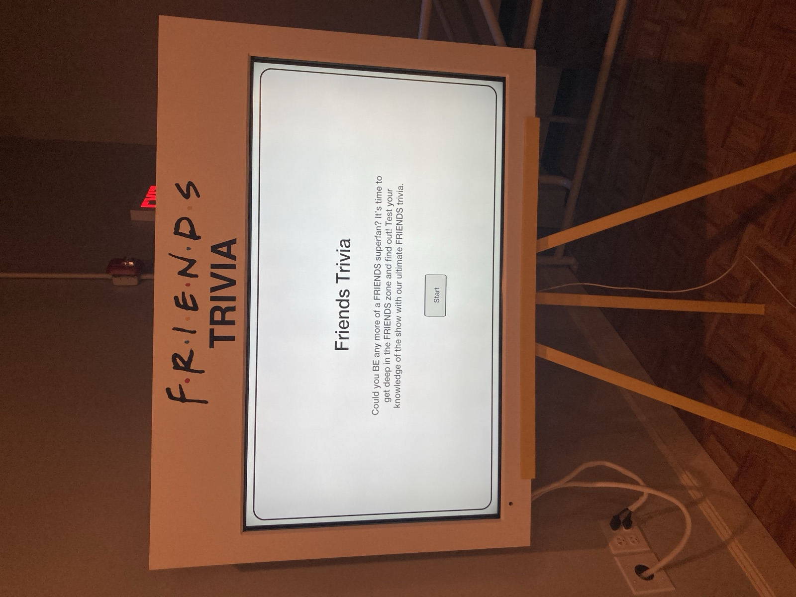
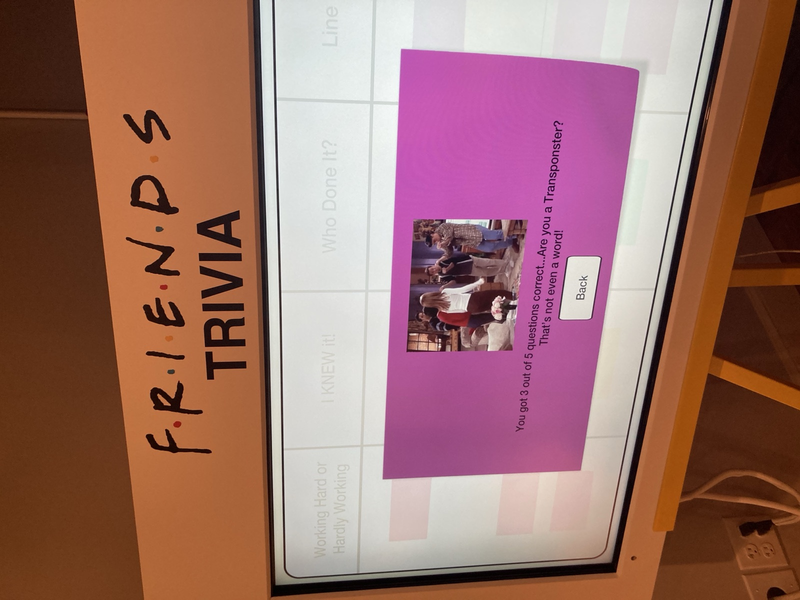
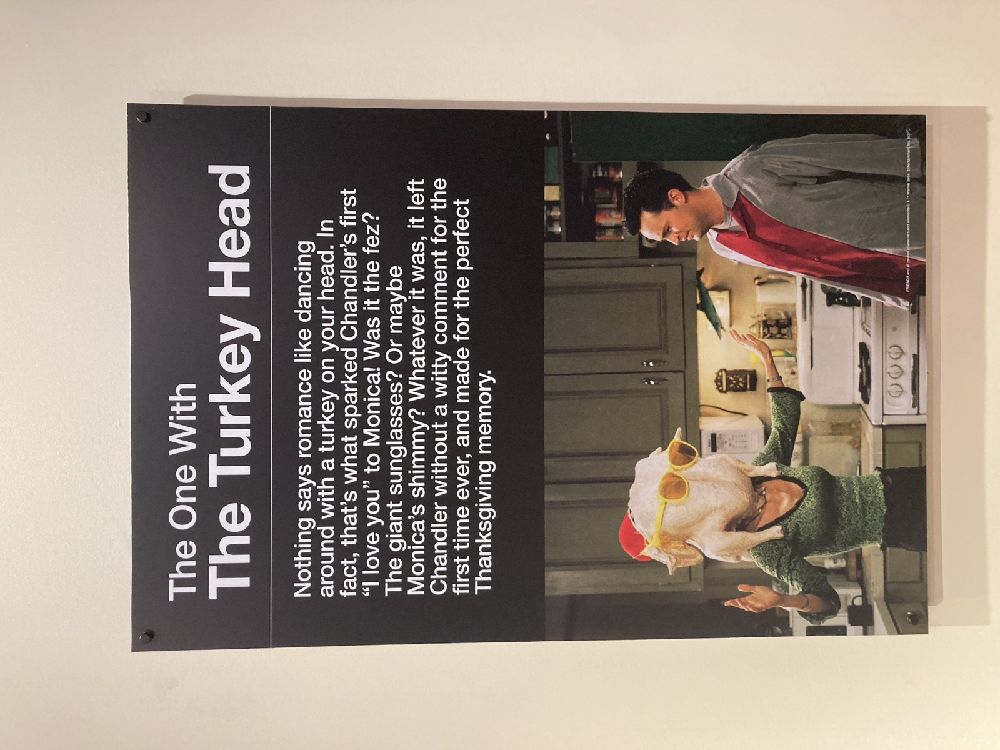
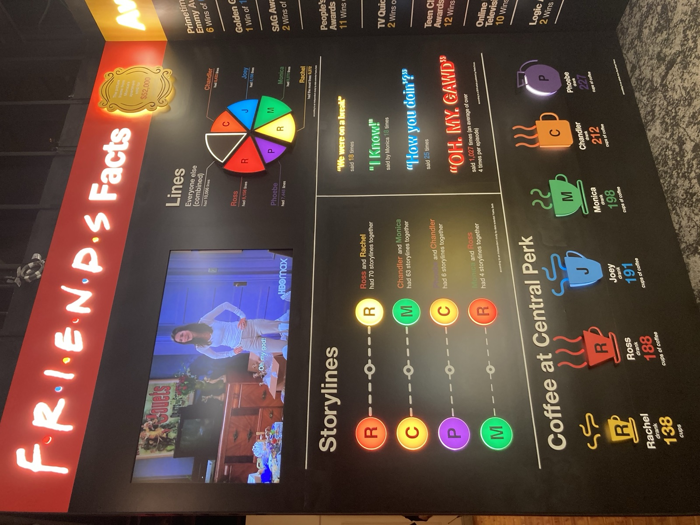
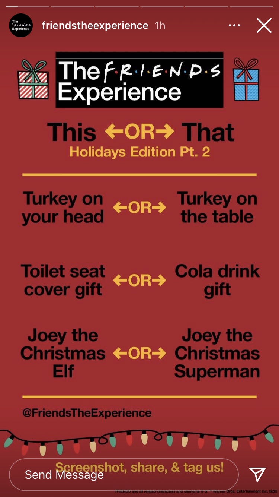
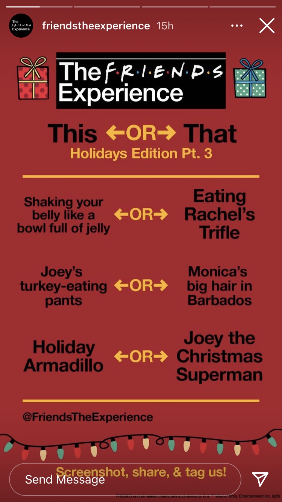
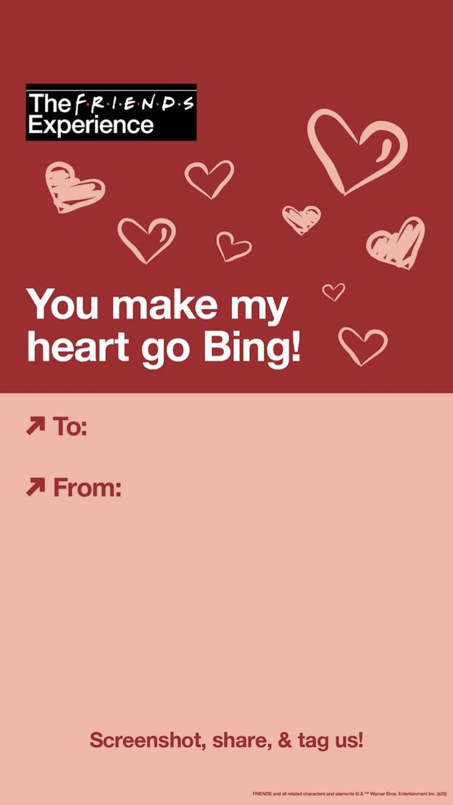
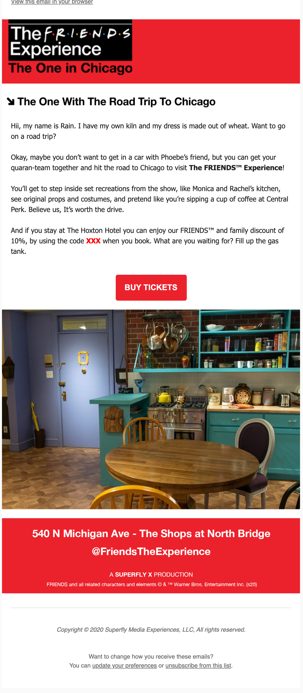
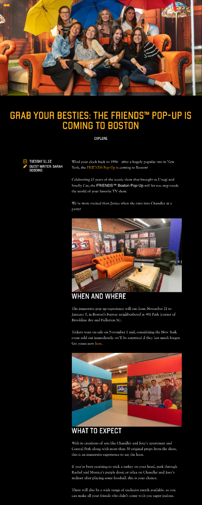
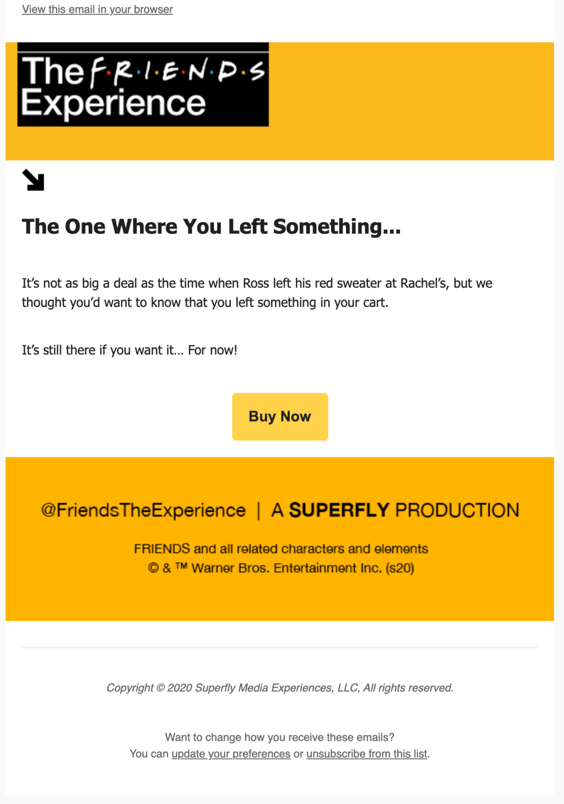
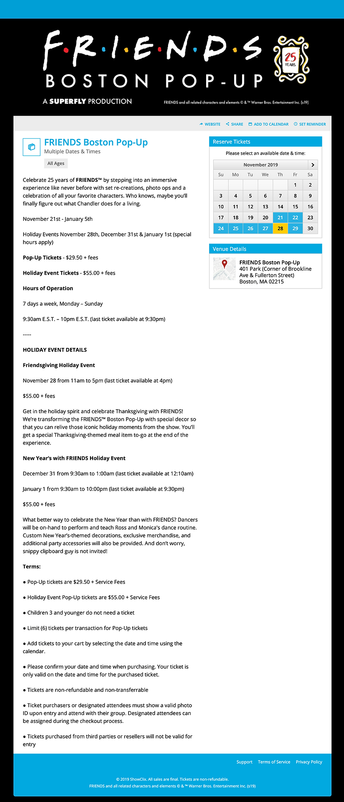
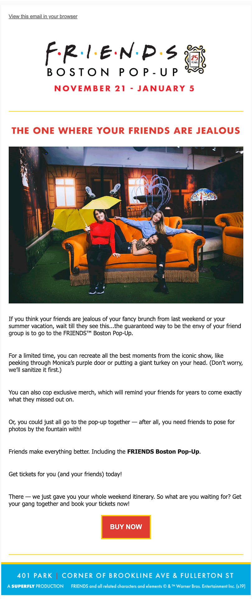
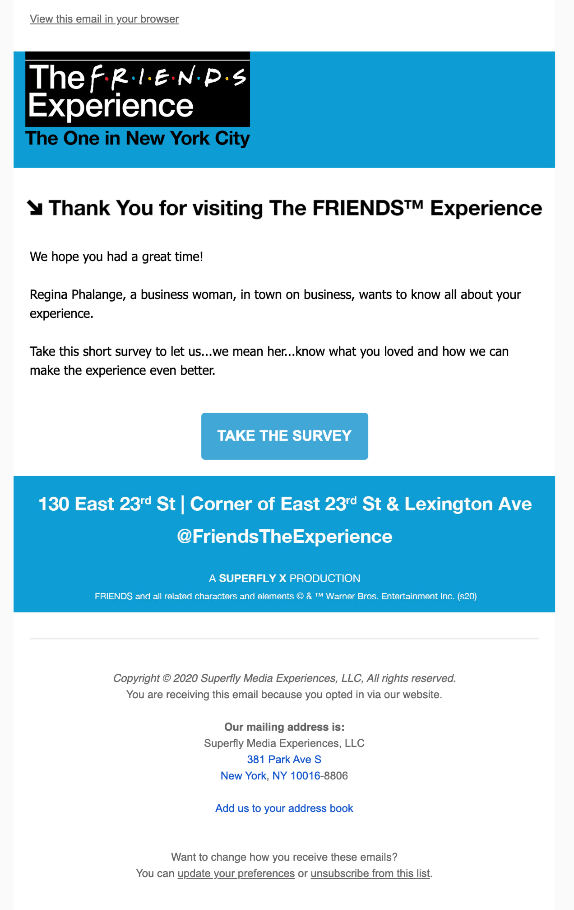
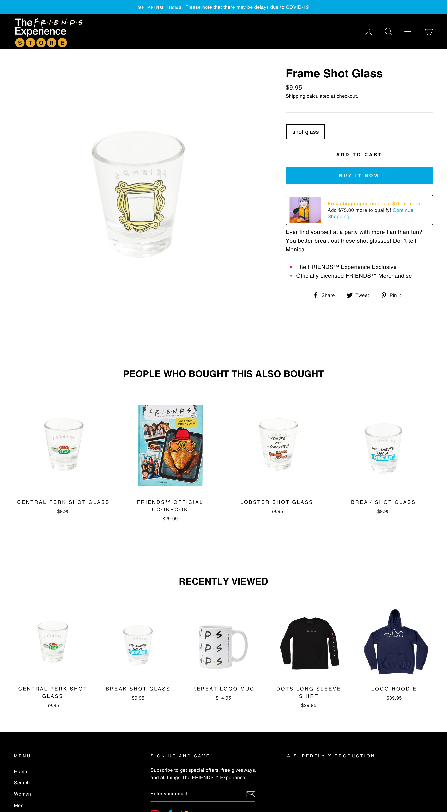
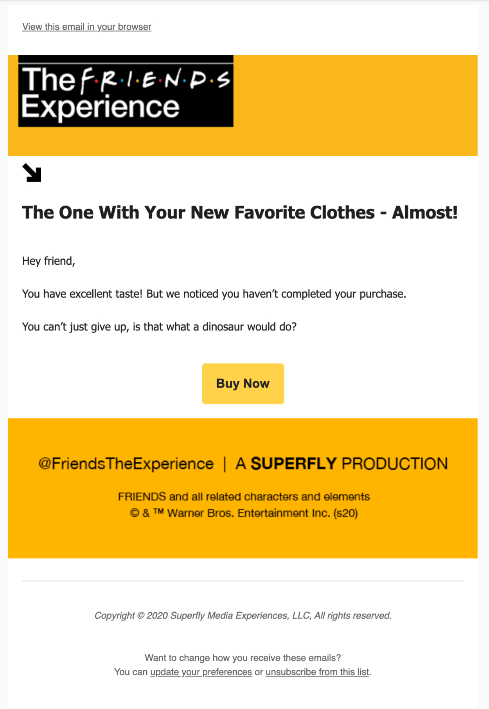